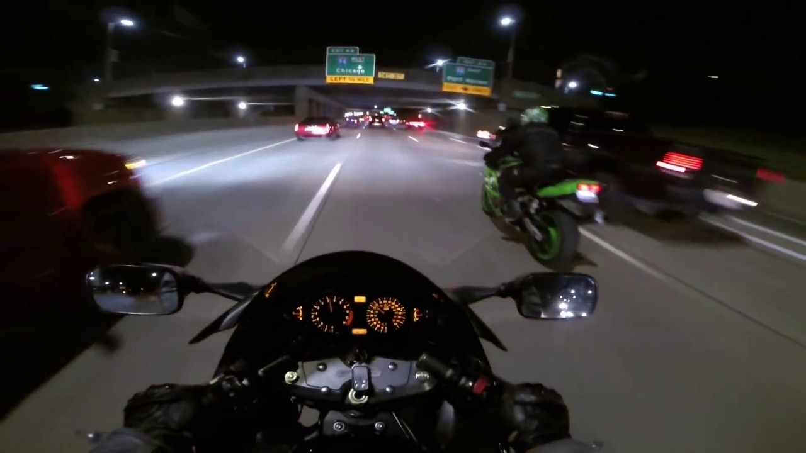
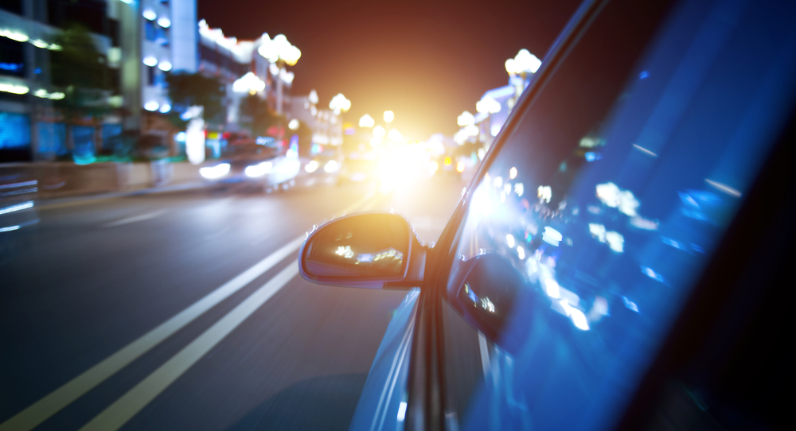

As a kid, I always found things related to speed or racing very interesting for example fighter jets, racing movies, sports bikes, Formula 1, horse racing, rocket ships, and more. There was always something about speed that felt freeing to me, like traveling through time at a certain pace. That was when I started dreaming of being able to fly or be incredibly fast someday.
Growing up, I played with cars and toys with wings. I fell in love with racing movies like Cars and plane films that inspired many of my hobbies, including collecting die-cast vehicles. I also loved riding my bicycle—it eased my mind whenever I rode and explored places with beautiful views.
As I grew older, my toys became bigger. By 17, I got my student license and was eager to learn how to drive. At 18, I earned my non-professional driver’s license and got my first motorcycle. That was when I truly learned how to fly. Every grip on the throttle heals me. Riding clears my mind—it feels like moving freely through space and time with nothing weighing me down.
Flying is not about speed or how fast you are going. It is about the feeling—reaching a certain RPM, feeling the wind rush across your face, and living fully in the moment. In that space, you feel nothing but yourself. This is one of my greatest comforts and ways of coping.
